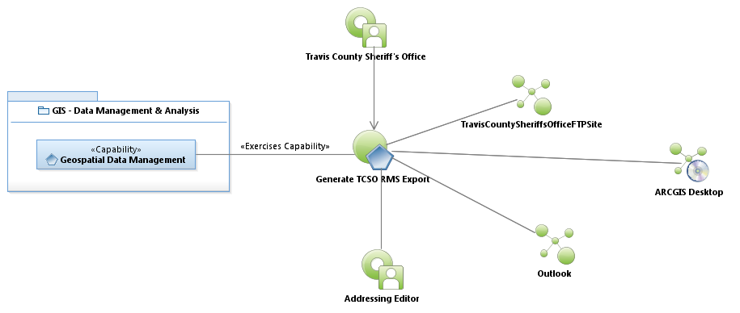

Sequence Diagram: Generate TCSO RMS Extract

Use Case Model: Generate TCSO RMS Extract
Architect: Aaron Brown, IT Enterprise Architect, Senior
Date Last Modified: 6/01/2012
User Review: Lee Kinser, Sean McClurkan, Stephanie Jenson
Date: 06/01/2012
* No scope statement Available *

Use Case Model: Generate TCSO RMS Extract
Sequence Diagram:
Generate TCSO RMS Extract